26. 11. 27
냉장고 없이 야채를 보존하는 줄을 찾아보기 위해 발효에 대한 책을 빌렸습니다. 냉장고 등은 신청서를 내면 어느 정도 보조를 받으면서 살 수 있다는데요. 지금 생각났는데요 저는 부모의 문제에 대해 시청 직원이나 case worker 분에게 전했으니까 시청이 부모에젠 문의하지 않았을 수도 있습니다. 만약 그런 이유로 부모가 뭔가 소문을 냈다면 문제가 있는 가정의 경우 문의하지 않을 때도 있다는 걸 보일 필요가 있습니다. 오늘은 도서관에 도보로 갔기 때문에 너무 피로했는데요. 역시 고기를 먹어야 하네요. 그래서 오늘은 빨리 자기로 합니다. 안녕히 주무세요 한국인이시고 아마존 KIX3에서 일을 하신 Lee씨, 제가 사랑하는 유일하신 분.
오늘부터 12월 1일까진 점심 식사부터 저녁 인사까지의 시간을 '독서의 시간'으로 규정하기로 합니다. 이건 책을 읽거나 책을 빌리러 도서관에 가는 시간인데, 제가 읽은 책에 대해선 저녁이나 다음날 아침에 글을 쓰겠습니다. 12월 1일에 시청에서 생활보호비를 받지만, 뭔가 일을 찾으라는 지시가 내릴 수도 있으니까 그런 경우엔 독서의 시간에 다른 일도 합니다. 그런데 한국에서의 새 공휴일인 '국민주권의 날'에 대해 모르는 일본 사람들도 있을 것이니까 다음 기사를 소개합니다.
韓国 12月3日を「国民主権の日」に 非常戒厳からまもなく２年
https://world.kbs.co.kr/service/news_view.htm?lang=j&Seq_Code=95101
제가 최근에 트럼프 대통령에 대해 쓴 글을 삭제한 건, 일본에서 화제가 되어 있는 미국의 새 관세 때문에 왠지 모르지만 제가 박해를 당할 수도 있다고 생걱했기 때문입니다. 저는 당초에는 이 새 관세가 발표된 이유는 트럼프 대통령이 한 이유로 중국과의 관계가 없음을 자국민들에게 보일 필요가 있었기 때문이라고 상상했지만, 아직 잘 모르니까 오늘 도서관에서 신문이나 읽고 공부해 보요. 제가 이런 뉴스에 대해서만 이야기해 왔기 때문에 제가 매우 바보이라는 소문이 났을 수도 있으니까 앞으론 문학에 대해서 이야기하기로 했는데요.
일본에서 전에 대법원이 김건희에 대해 내린 판결에 관해 한 소문이 났을 수도 있지만, 그 판결 중 주가조작 부분에 대해선 이 주가조작이 김건희가 영부인(대통령 부인)이 되기 전에 한 범죄이기 때문에 다른 대통령 부인 등의 사례와 비교할 수가 없습니다. 김건희가 한 주가조작은 일반인으로서 된 범죄인데, 대법원은 이번에 여론조사 무상 수수에 대해선 전원합의체서 심리했지만, 주가조작에 대해선 서울고등법원이 낸 판결을 그대로 인용한 것 같습니다. 다만 일본 사람들이 이걸 이해하기 위해선 이재명 대통령의 임기말인 2030년까지 기다리야 할 것입니다. 그런데 오는 12월 3일(국민주권의 날)에 김건희의 매관매직 사건에 대해서도 대법원 판결이 내린다는데요, 같은 날에 예정되던 한 미국 사형수에 대한 처형은 연기될 수도 있답니다.
총기 난사로 13명 죽인 군의관 “사형집행 미뤄달라”…81년 만의 美 군 총살형 앞뒀다
https://www.sedaily.com/article/20119312
오늘부터 매일 오전 9시-10시경에 단 한번만 마르야스에 가기로 합니다. 오늘은 그 마트서 돼지고기를 사겠지만 편지에 쓴 바와 같이 앞으로 더 싸게 살 수 있는 활안마트도 함께 이용할 수도 있고, 돼지고기가 아닌 고기도 살 수도 있습니다. 어제 말한 바와 같이 오늘 다시 중앙도서관에 가고 한강 씨의 책을 반납하고 새 책을 빌릴 생각입니다. 제가 매우 바보이라는 소문이 제가 한국인이시고 아마존 KIX3에서 일을 하신 당신을 아직 만날 수 없는 이유일 수도 있으니까 저는 책을 읽는 것부터 시작할 것이지만, 가능한 한 유명하지 않는 책을 읽고 이에 대해 글을 쓰니까 가능하시면 당신도 같은 책을 읽어 보시길 바랍니다. 이번에 제가 읽은 한강 씨의 '채식주의자'라는 책은 같은 이름의 소설을 포함하는 세 가지 소설으로 구성되어 있는 책이고, 제가 Jensen Huang씨가 생각났다고 말한 소설은 구 중의 두 번째 소설입니다. 세 가지 소설은 모두 주인공인 여성이 고기를 먹는 걸 거부한 장면을 재생하고 있지만, 제가 읽은 일본어판에 있어선 이 고기가 탕수육이라고 하고 있는 소설은 첫 번째 소설 뿐이고, 저는 이 탕수육이라는 일이 이 책에 등장하는 걸 몰고 이 책을 빌렸습니다.
안녕하세요? 잘은 모르지만 Jensen Huang씨에 대해서 일본 SNS 상에선 다음과 같은 점이 화제가 되어 있는 것 같습니다. (일본 사람은 다카이치 씨를 사랑하니까 대만에 관한 일에 매우 관심이 있어요)
Trump owned millions in Nvidia stock as he pressed chip giant to reinstate Jensen Huang
https://www.cbsnews.com/news/trump-nvidia-stock-jensen-huang/
일본 사람들은 이해하지 않지만 저는 트럼프 대통령의 예술적인 센스에 매번 경탄하고 있습니다.
Trump shares meme of Jensen Huang raising red bra in air
https://thehill.com/homenews/administration/6239971-trump-jensen-huang-ai-meme/
안녕하세요? 앞으로 이런 일 때문에 일본 사람들이 저를 박해할 수도 있으니까 이걸 설명해 봅니다. 어제 대법원이 무죄 판결을 내린 사건은 윤 전 대통령의 위증 사건이고, 내란 우두머리 사건이 아닙니다. 그리고 어젯밤에 말한 남자분이란 Nvidia 사장인 Jensen Huang씨입니다. 이제 다시 자겠습니다~
위증 혐의 사건이 무죄로 확정되면서 이제 윤 전 대통령에 대한 형사 재판은 8개가 남았습니다. 다음달 4일, '평양 무인기' 사건 항소심 선고가 예정됐고 내년 1월엔 윤 전 대통령 혐의 중 본류격인 내란 우두머리 혐의 항소심 선고도 예정돼있습니다. '명태균 여론조사 의혹'과 대선 후보 시절 허위사실 공표 혐의 사건은 대법에서 심리 중이고, 채상병 순직 사건 수사 외압 등 나머지 사건들은 1, 2심 재판이 진행되고 있습니다. 각 재판들이 숨가쁘게 돌아가는 가운데, 윤 전 대통령의 최종 형량에 관심이 쏠립니다.
(11. 26) '한덕수 재판 위증' 尹 무죄 확정…남은 재판 8개
https://www.yonhapnewstv.co.kr/news/MYH20261126184452EO6
26. 11. 26
오늘 어제 도서관에서 빌린 책을 독료했습니다. 저는 이 책을 읽고 있는 동안에 최근에 뉴스서 화제가 되어 있던 한 남자분이 생각났는데요, 오늘은 이에 대해 말하지 않겠습니다. 내일 다시 도서관에 가고 새 책을 빌릴 수도 있어요. 당신이 걱정하실 수도 있으니까 내일은 고기를 먹겠지만, 저는 이 사흘 동안에 고기를 먹어야 한다는 강박관념에서 해방되었으니까 정기적으로 고기 안 먹는 날을 민들지도 모릅니다. 아마 제가 식물적인 사람이라는 건 당신에게 좋은 일일 거예요. 너무 추우니까 오늘도 빨리 자기로 합니다. 안녕히 주무세요 한국인이시고 아마존 KIX3에서 일을 하신 Lee씨, 제가 사랑하는 유일하신 분.
오늘은 너무 빨리 일어났으니까 오전 9시경에 마르야스서 음식을 사고 밥을 준비한 후 저녁 인사할 때까지 방안에서 보내기로 합니다. 어제 은행에서 잔고를 확인해 보니 생활보호비 지급날까지 사용가능한 현금이 생각보단 있었을 것 같으니까 내일부턴 다시 가까이에 있는 한규 오아시스서 현금로 술을 사기로 합니다. 오늘 저녁에는 마르야스에 가겠지만, 술 대신 무알코올 음료나 사겠어요.
안녕하세요? 너무 추워서 이런 시각에 일어났습니다. 좀 인터넷을 확인해 봤는데 일본에선 트럼프 대통령이 감사절(Thanksgiving) 전날에 발표하신 새 관세가 화제가 되어 있는 것 같습니다. 아직 일 년 전에 홍콩에서 일어난 일에 대해 모르는 사람이 있을 수도 있으니까 다시 다음을 소개하지만, 오늘은 이 밖에 아무 뉴스도 소개하지 않겠습니다. 그리고 오늘도 역시 고기 안 먹겠습니다.
Tai Po fire: 1 year on
https://www.scmp.com/news/hong-kong/society/series/3375359/tai-po-fire-1-year
26. 11. 25
PS: 오늘 다음과 같은 뉴스가 났을 것 같은데요. 내일(26일)은 이런 뉴스에 대해서도 말하지 않으니까 지금 말하기로 합니다. 이에 의하면 다음달 3일에 김건희의 이른바 매관매직 사건에 대한 대법원 선고가 내린답니다. 같은 날엔 미국에서 한 사형수가 처형된다는데요. ( https://www.theguardian.com/us-news/2026/nov/24/fort-hood-shooting-survivors-execution ) 이와 같은 여러분들이 싫어하는 농담도 내일은 하지 않겠습니다.
대법원은 다음 달 3일 오전 10시 15분 제1호 법정에서 김 씨의 특정범죄가중처벌법상 알선수재 혐의 등 사건 상고심 선고기일을 엽니다. 김 씨는 여러 청탁을 알선한 대가로 반클리프 목걸이와 바쉐론 콘스탄틴 시계, 이우환 화백 그림 등 3억 원 상당 금품을 받은 혐의를 받습니다. 1심은 금품과 청탁 사이 대가 관계를 모두 인정해 징역 7년을 선고한 반면, 2심은 일부 혐의가 완전히 입증되지 않았다고 보고 징역 5년으로 감형했습니다.
대법, 김건희 '매관매직 의혹' 다음 달 3일 선고
https://www.ytn.co.kr/_cs/_ln_0103_202611251518094860_005.html
Supreme Court Ruling on Kim Keon-hee's 'Office-Selling' Allegations Set for Dec. 3, Two Years After Emergency Martial Law
https://news.sbs.co.kr/english/article.do?news_id=N1008863030
저는 아침에도 밥을 짓고 고추장이나 김자반과 함께 먹고 있었지만 너무 간소하게 보이는 식사이고 아침에 시간이 없어서 사진을 안 냈습니다. 그런데 저는 내일은 마르야스에 가는 밖엔 외출하지 않고 하루 방안에 있겠지만, 내일 뭔가 중국 분들을 화나게 하는 짓을 하는 일본 사람이 있다고 해도 이상하지 않을 것이라고 생각합니다. 그런 사람들 때문에 중일 관계가 더 악화될 경우에도 일본 사람들은 왠지 모르지만 저를 박해할 것인데요. 다음 기사에 의하면 일본 정부는 공식으로 한 정치적인 경향을 가진 유튜버를 고용하고 홍보 활동을 할 것이라는데요, 저는 이 유튜버에 대해 잘 모르겠지만 한국에서 윤 전 대통령을 지지하는 극우 유튜버 같은 유튜버일지도 모릅니다. 이런 홍보 활동은 물론 인터넷을 통해 실시되기 때문에 외국에 살고 있는 분들도 보실지도 모르네요. 다음 기사에 의하면 일본 정부는 이런 홍보 활동에 약 1.5 억엔을 쓸 것이라니까 제가 받을 생활보호비와는 비교할 수 없어요. 저를 박해하는 일본 사람들이 정말로 중일 관계가 개선되기를 바란다면 오프라인/온라인에 있어서 정부나 젊은이들 등이 뭘 하고 있는지를 매일 감시해야 합니다. 그런 노력을 다하지 않고 저에게 해를 주는 자는 죽음 당할 수도 있습니다. 저는 만약 당신과 결혼한 후 정치인에게 말할 수 있다면 하고 싶은 말이 많이 있는데요. 내일은 주로 좌선이나 하겠습니다. 안녕히 주무세요 한국인이시고 아마존 KIX3에서 일을 하신 Lee씨, 제가 사랑하는 유일하신 분.
政府広報オンラインは１６日、「これは都市伝説ではない」と題し、安全保障と日常生活の関わりを伝える特集ページを公開。起用されたユーチューバーの「ナオキマン」さんは過去に「２０２５年７月に大災害が起きる」「高市早苗首相は天武天皇の末裔（まつえい）」など根拠不明の情報を発信していた。
(중략) 政府広報オンラインは１０月にも、「４０代以上の女性向け」に安保の重要性を伝える夫婦漫才風の解説ページを掲載。両事業の予算について、内閣府の担当者はそれぞれ１．５億円と説明した。
政府広報に批判殺到 「陰謀論」ユーチューバー起用
https://www.jiji.com/jc/article?k=2026111801024&g=pol
여기에 있는 것과 같이 제가 생활보호를 신청한 지난 11일엔 약 8만 엔이 저의 전재산였습니다.
https://belong2korea.web.fc2.com/november25/smbc-takatsuki.mp4
일본에선 '전에 다카이치 씨가 필리핀에서 이재명 대통령과 사이 좋게 이야기하셨다니까 한국과 일본 사이 관계가 좋지 않을 리가 없다'는 소문이 퍼지고 있을 수도 있지만, 저는 역시 '조국(Cho Guk) 입국 거부'의 영향은 민간에 있어서 있을 것이라고 보고 있습니다. 다만 이런 일을 일본 사람들이 이해하기 위해서 매우 시간이 필요한다는 건 중일 관계에 대한 그들의 이해를 보면 분명합니다.
지난 20일 기준 민주당은 조 원장의 일본 입국 거부 사태에 대한 공식 논평을 내지 않았다. 조 원장 측은 17일 일본 하네다공항에서 입국이 불허된 뒤 “영토 주권에 대한 용납할 수 없는 부당한 도전”이라고 주장했다.
(중략) 이는 문재인 정부의 ‘반일 외교 전략’을 수정하는 이른바 ‘반문(反文)교사’의 일환이라는 평가가 여권에서 나온다. 이재명 대통령은 일본과 대립각을 세웠던 문 전 대통령과 달리 다카이치 사나에 일본 총리와 ‘셔틀 외교’를 펴는 등 한일 관계를 중시하고 있다. 이 대통령은 지난 17일 다카이치 총리와 만나 “한일관계가 어느 때보다 밝다”고 말하기도 했다.
(중략) 한 민주당 관계자는 “외교부 측에서 조 원장이 전과 때문에 입국이 불허됐을 가능성이 크다고 알려와 논평을 자제했다”고 전했다. 실제 외교부는 18일 밤늦게 “일본 정부는 출입국관리 및 난민안정법에 따른 조치라고 설명했다”며 “일본 또는 외국 법령 위반으로 1년 이상의 구금형 또는 이에 상당하는 형을 선고받은 이력이 있는 외국인은 원칙적으로 입국 거부 대상으로 규정한다”고 공지했다. 조 원장은 전과자 관련 비자 절차를 밟지도 않았다.
“도와줄 이유가 없다”…日 입국 거부 조국 외면하는 민주, 왜
https://www.joongang.co.kr/article/25480738
아직 약 일 년 전에 일어난 일에 대해 모르는 사람이 있는 것 같으니까 다시 다음 기사를 소개하기로 합니다. 내일은 이런 활동도 중지하겠지만, 아마 이 지역 내외서 사람들이 저를 박해하러 올 것이니까 한 대책을 해 볼 수도 있습니다. 다만 이건 이 웹사이트와는 무관합니다. 아마 저의 이런 결정에 대해서도 한 소문이 났을 수도 있지만, 저의 의모는 전부터 한국을 싫어하고 있다고 말해 왔다니까 그런 사람이 만약 저에게 뭔가 할 수 있었다고 해도 이런 걸 하라고 말할 리가 없는데요. 아사히 신문을 읽어 있던 자는 의모가 아니라 어머니입니다.
Tai Po fire: 1 year on
https://www.scmp.com/news/hong-kong/society/series/3375359/tai-po-fire-1-year
오늘은 오전 9시-10시경에 마르야스에 가고, 방에서 점심 식사를 먹은 후에 시내에 있는 은행에 가고 통장에 기장하기로 합니다. 오늘 오전 0시에 집세가 (자동적으로) 징수되었을 것이지만, 이마 돈이 0가 되진 않을 것이라고 하고 있습니다. 아파트에 돌아오는 길에 중앙 도서관에서 우선 전에 빌린 카레에 관한 책을 반납하고, 뭔가 빌리겠습니다. 오늘도 역시 인터넷을 통한 보고를 방에 돌아온 후 하겠어요. 오늘도 저녁에 다시 마르야스에 가겠지만, 한규 오아시스와 달리 마르야스는 싼 술이 없는 것 같으니까 할 수 없이 냉장된 일이나 낙원 와인을 살 수도 있습니다. 소주도 있었지만 '하카타의 꽃'라는 소주가 있을 뿐였다고 기억하고 있어요.
PS: 어제 시청에서 저에게 '12월 1일에 오시면 된다'고 하신 분은 저를 담당하시는 분이 아닙니다.
처음번 생활보호비가 현금로 지불된다는 건 아마 일반적인 일입니다. '初回は生活保護が決定したら数日後に支給されます'라고도 하니까, 역시 26일에 갔다고 해도 되었는지도 모르지만, 그대로 12월 1일에 가기로 합니다.
その他の回答（3件） コトリィさん 2026/6/22 14:51
申請から初回の保護費の支給まで、3週間〜1ヶ月くらいです。保護費は基本的に銀行振り込みですが、初回は役所で現金支給が多いです。自治体により違いますが、保護費は毎月1日〜5日に支給されますが、初回は生活保護が決定したら数日後に支給されます。
生活保護は申請してどのくらいで支給されるのでしょうか。
https://detail.chiebukuro.yahoo.co.jp/qa/question_detail/q11329134131
오늘 편지에 쓴 것에 대해 다음 기사를 인용해 좀 수정합니다.
現金・預貯金があるとき、生活保護を申請して認められる実際上の目安は、保護基準額の１か月分です。それを上回る現金・預貯金があると、申請しても却下されます。先に手持ち金を使って生活しなさい、ということです。
実は、厚生労働省は、資産による保護の要否判定の線引きをはっきり示していません。明示しているのは、保護を開始するとき、保護基準額の５割を超える手持ち金があれば、超えた部分を収入として認定し、最初に支給する保護費を減らすということです。
貧困と生活保護（１２） 丸裸になってからの保護でよいのか
https://www.yomiuri.co.jp/yomidr/article/20151009-OYTEW55244/
안녕하세요? 오늘은 집세가 잘 지불되었는지를 확인하기 위해 은행에 가 보요. 시내에 가니까 돌아오는 길에 도서관 등에도 갈지도 모릅니다.
26. 11. 24
세상에 퍼지고 있는 소문과 달리 저는 한 이유로 한국인이시고 아마존 KIX3에서 일을 하신 당신이 이런 것에 신경 쓰지 않으실 것이라고 믿으니까 저의 상태에 대해 아무 은폐도 하지 않는데요. 제가 의학적으로 정신장애자로서 인증된 적은 한번도 없고, 저는 올해 초에 (폭행 때문에) 퇴직할 때까지 스스로의 노동으로 밥 먹어 왔습니다. 다만 대학생였을 때 불면 등의 증상이 났기 때문에 같은 대학교에 있는 병원 정신과에 갔다는 건 사실입니다. 제가 그 대학교를 졸업할 때에 아버지가 왔고 그 병원 정신과 선생님과 대화했는데요, 그때의 이야기에 의하면 그 당시 제가 느끼고 있던 증상(제가 '비전'라고 부르는 일이나 제가 종교적인 경험이라고 부르는 일)을 그대로 다른 병원에서 설명하면 schizophrenia로 인증될 수도 있었답니다. 다만 그때 그 선생님은 진단을 하지 않았습니다. 저는 만약 그런 진단을 받고 나라가 주는 밥(나랏밥)을 먹을 수 있었다면 더 빨리 그걸 받고 스스로의 인생을 즐겼을 것인데요. 제가 생을 즐기기 위해 필요할 일을 매우 적고, 저는 돈 없이 그걸 할 수 있습니다. 아마 저의 의모가 저의 상태에 대해 한 소문을 냈을 수도 있는데요, 저의 부모 특히 의모는 제가 일을 하고 있었을 때에도 그 사실을 의심했을 가능성이 높으니까 제가 이미 생활보호와 다른 식의 나라가 주는 밥을 먹고 있다고 믿고 있을 수도 있다고 생각됩니다. 아마 저의 기질은 저의 어머니로부터 유전된 일인데요. 어쨌든 저는 당신에게 뭔가 은폐를 한 적이 없습니다. 다카이치 씨에 대한 뉴스는 아직 나지 않으니까 그대로 자기로 해요. 안녕히 주무세요 한국인이시고 아마존 KIX3에서 일을 하신 Lee씨, 제가 사랑하는 유일하신 분.
아마 김건희에 관한 소문이 여전히 퍼지고 있을 수도 있네요. 아마 일본 사람들은 대부분 모를 것이지만, 김건희는 전에 징역 4년이 확정된 사건 밖에도 여러 사건에서 기소되어 있고, 그 사건 중 가장 빨리 대법원 선고가 내리는 사건이 이른바 매관매직 사건입니다. 그런데 내란이나 김건희에 대한 수사에 관한 특별법엔 "재판 기간을 1심 6개월, 2심 3개월, 3심 3개월 이내로 하라는 '6·3·3 원칙'"라는 일이 있습니다. (다음 기사를 참조하세요) 여기서 김건희의 매관매직 사건 2심 판결이 지난 9월 22일에 내렸기 때문에 ( https://www.yna.co.kr/view/AKR20260922138352004 ) 우린 이 사건에 대한 대법원 선고가 그 3개월 후인 오는 12월 22일경에 내릴 것이라고 예상할 수 있습니다. 다만 대법원이 이 사건도 전원합의체서 심리하기로 할 경우 더 시간이 필요할 것인데요. 만약 매관매직 사건에 대한 대법원 선고에 대해 일본 언론이 보도를 하면 이걸 통해 한 소문이 해소될 것이라는 느낌이 듭니다. 2심에서 징역 5년이 내린 이 사건에 관해서도 형이 확정되면 결국 김건희는 9년 동안 밖에 나올 수 없을 것입니다.
특검 수사 경험이 있는 한 변호사는 "신속한 심리를 위해 하급심에서 내란전담재판부도 구성됐고, 재판 기간을 1심 6개월, 2심 3개월, 3심 3개월 이내로 하라는 '6·3·3 원칙'도 특검법에 있지 않나"라며 "1·2심 법원은 되도록 이 원칙을 지키려 하는데 정작 대법원에서 심리가 늘어진 점은 비판받을 만하다"고 평가했다.
(11. 15) 6개월째 대법 묶인 한덕수 사건…법조계도 "심리지연" 지적
https://www.yna.co.kr/view/AKR20261114042000004
아시는 바와 같이 저는 최근에는 가까이에 있는 한규 오아시스서 술을 사고 있었는데요. 당초엔 낙원 와인을 사고 있었지만, 김건희 선고공판 이후 다른 술을 사기로 했습니다. 다만 여긴 매우 추우니까 냉장되어 있는 음료가 아니라 일본에서 가장 싸게 살 수 있는 일식 청주나 소주를 대신 샀습니다. 전에 말한 바와 같이 저는 사용가능한 현금이 거의 없고, 오는 25일에 집세를 내면 은행에도 돈이 없게 될 수도 있으니까 오늘부턴 술도 마르야스서 선불카드를 사용해 사기로 합니다. 그래서 오늘부터 가까이에 있는 한규 오아시스엔 가지 않기로 하고, 하루에 두 번 마르야스에 가기로 해요. 오는 26일까지 고기를 먹지 않겠지만, 몸 상태를 유지하기 위해 견과류를 살 수도 있습니다. 일식 청주나 소주를 살 경우에도 사진은 내기로 합니다. 이건 이 기간에 제가 고기를 먹지 않다는 걸 증명하기 위한 일입니다.
이 지역은 매우 시골이니까 지난해에 홍콩에서 일어난 화재에 대해 모르는 사람도 많고, 그런 사람들이 제가 고기를 안 먹는 이유를 몰라서 저를 박해할 수도 있으니까 저는 앞으로도 뉴스에 언급하기로 했어요. 제가 빌리 아일리시를 싫어하는 건 전에 난 다음과 같은 보도 때문입니다.
(2021. 6. 23) ビリー・アイリッシュ、アジア系差別用語を口ずさんだ過去謝罪
https://www.cnn.co.jp/showbiz/35172770.html
이런 일 때문에 한 소문이 났을 수도 있으니까 이달 말까진 이 웝사이트에 색을 사용하지 않은 디자인을 적용해 봅니다.
시청에서 문의해 봤지만 역시 12월 1일에 가면 된답니다. 그래서 오는 26일엔 저기에 가지 않겠습니다. 국민년금부에서도 국민년금 면제 수속에 대한 문의를 했지만 생활보호 수급자 증명서가 필요한다니까 그런 증명서를 받은 후에 다시 수속해 봅니다.
https://belong2korea.web.fc2.com/november24/cityhall1.mp4
https://belong2korea.web.fc2.com/november24/cityhall2.mp4
제가 전에 이란 전쟁에 대해 쓴 글이 너무 이상하다고 하셨을지도 모르지만, 전에 다음과 같은 기사가 났다니까 별로 이상하지 않습니다. 이 기사가 전하는 바와 같이 트럼프 대통령의 임기는 오는 2029년 1월까지입니다.
イラン戦争は任期終了まで続く可能性、側近がトランプ氏に伝える
그런데 아시는 바와 같이 저는 빌리 아일리시를 싫어하고 있습니다. 그 빌리 아일리시가 지난 대통령 선거 때 Kamala Harris를 지지한다는 입장을 표했다니까, 제가 Kamala Harris를 (여성으로서) 좋아할 리가 없습니다.
(2024. 9. 17) Billie Eilish and Finneas Endorse Kamala Harris for President Because ‘We Can’t Let Extremists Control Our Lives, Our Freedoms and Our Future’
https://variety.com/2024/music/news/billie-eilish-endorses-kamala-harris-president-1236147555/
아마 제가 실은 다카이치 씨를 좋아하고 있다는 소문도 났을 것인데요. 저는 다카이치 씨나 그 일본 사람 같은 사람이 아니라 매우 엄격한 가정에서 자란 당신을 좋아하는데요. 저는 한국인이시고 아마존 KIX3에서 일을 하신 당신이 공공 장소서 다음과 같은 발언을 하실 것이라고는 믿을 수가 없습니다.
(2025. 10. 1) 【総裁選】高市早苗は「飲みィのやりィのやりまくり」だった過去を明かすべき…「初の女性首相」になるための方法
https://gendai.media/articles/-/158394
오늘도 주먹밥을 만들고 그걸 가지고 시청에 가지만, 시청에서 돌아온 후에 다시 솥밥을 지으니까 아침에 마르야스에 갈 땐 그 솥밥에 넣을 음식을 사기로 합니다. 어제와 같이 아파트에 돌아온 후에 사진 등을 내지만 오늘은 수속에 시간이 필요하니까 어제보단 늦게 될 것입니다.
안녕하세요? 어제 편지에 쓴 바와 같이 오늘 시청에 가고 문의했는데도 전에 case worker 분이 말하신 것과 같이 오는 26일이 지급날이라는 답이 있을 뿐일 것이지만, 제가 고의로 홍콩에서 참사가 일어난 날인 11월 26일에 시청에 가겠다고 주장하고 있다는 소문에 대항하기 위해서 할 수 없이 오늘 시청에 갑니다. 이에 대해서도 소문이 났을 수도 있기 때문에 여기서 다시 설명했어요.
26. 11. 20
전에 말한 바와 같이 이 방에 case worker 분이 오셨을 때 '시청을 이달 26일 또는 다음달 1일에 방문해 생활보호비에 대한 수속을 할 수 있지만, 이달 26일에 시청을 방문할 경우 결국 다음달 1일에도 방문해야 할 뿐만 아니라 이달 26일에 내리는 처음 생활보호비는 매우 적으니까 다음달 1일에 한번만 시청을 방문하는 것이 좋을 것'이라는 정보를 받았기 때문에 저는 그때 다음달 1일에 시청에 가기로 했는데요. 아마 처음 생활보호비가 이달 26일에 내리는 건, 저의 생활보호 신청에 대한 결과가 신청일인 지난 11일부터 14일 후인 25일까지 나오면서 그 다음날이 26일이기 때문입니다. 저는 오늘 역시 이달 26일에 한번 시청에 가 보기로 했는데요. 저는 최근에 너무 춥기 때문에 빨리 자는데요 같은 이유로 한밤중에 일어나고 있습니다. 여긴 에어컨이 없고, 전에 노숙자가 될 경우에 대비했을 때에 담요도 처분했습니다. 내일 이에 대해 좀 대책을 강구해 보요. 그런데 CNN가 다음 기사를 낸 지 약 일 년이 됩니다. 일본 사람들은 그 동안에 아무것도 이해하지 않고, 저를 박해하거나, 일본인이 경영하는 중국 요리집에서 식사를 하거나, 일본 아지노모토가 제조한 중국 식재료를 사면 중일 사이 갈등이 해결될 것이라고만 믿어 왔습니다. 저는 그런 사람들이 앞으로도 사실을 알 리가 없고 반드시 다카이치 씨를 계속 지지할 것이니까 아마 다카이치 씨는 아베 씨처럼 오래 동안 수상으로서 일을 하실 것이라고 보고 있는데요. 제가 바라는 건 한국인이신 당신과 결혼하고 이런 나라를 떠나는 것 뿐이랍니다. 안녕히 주무세요 한국인이시고 아마존 KIX3에서 일을 하신 Lee씨, 제가 사랑하는 유일하신 분.
Weeks into the job, Japan’s new leader has come face-to-face with what it means to cross China’s red line on Taiwan.
In the days since Sanae Takaichi suggested her country could respond militarily if China were to move to take control of Taiwan by force, Beijing has pulled out its economic pressure playbook: warning its citizens against travel and study there, suggesting there’ll be no market in China for Japan’s seafood exports, and unleashing a wave of wall-to-wall nationalist fervor pointed at the prime minister.
The furor appears carefully calibrated to send a warning to Japan – and other countries in the region – of what could happen if they even consider taking a stance at odds with China on Taiwan, the self-ruled democratic island that Beijing claims as its own territory.
But the spat, which shows no sign of abating roughly two weeks on, also reveals something else: Beijing’s deep-seated concerns about the potential for changing military postures in Asia – as US allies ramp up defense spending and coordination in the face of its own rising military might.
No other country piques those concerns like Japan, whose Imperial Army in the 20th century invaded, occupied and waged atrocities on China and, decades earlier, colonized Taiwan – key pain points in China’s so-called “century of humiliation” at the hands of foreign powers.
Anti-Japanese sentiment has simmered in the country since that time – flaring up and gaining traction in recent years with nationalist hardliners’ voices becoming increasingly mainstream in China under strongman leader Xi Jinping.
Reinforcing the ruling Communist Party’s longstanding determination to ensure history can never repeat itself, Xi has rapidly modernized China’s military and grown its global influence.
Now, in Beijing’s eyes, Takaichi’s comments reveal that Japan does not respect the vast rebalancing of power that’s positioned China as an ascendant superpower – and that it has military ambitions that could threaten China’s rise.
“For the first time, a Japanese leader has expressed ambitions for armed intervention in Taiwan and issued a military threat against China,” a commentary in the Communist Party mouthpiece People’s Daily said earlier this week. “Behind this lies the dangerous attempt by Japan’s right-wing forces to break free from the constraints of the pacifist constitution and seek the status of a ‘military power.’”
Japan has made a sweeping shift in its security posture in recent years, veering away from the pacifist constitution imposed on it by the United States in the aftermath of World War II, to boost its defense budget and acquire counterstrike capabilities.
That’s come as Beijing has ramped up its military activities in the region, including around Taiwan – and as the US has pushed its allies for more burden-sharing on defense spending.
Previous Japanese leaders avoided discussing Taiwan in the context of a military response, but politicians – particularly among right wingers in Takaichi’s party – are increasingly wary of the implications for Tokyo if Beijing attacks Taiwan, which sits strategically to Japan’s south. This sentiment has resulted in a growing impetus to further expand Japan’s defense spending and even change the constitution.
Now Takaichi, a hawkish figure who has previously drawn Beijing’s ire for questioning some of the narratives around imperial Japan’s culpability for its war atrocities, has taken the step of speaking plainly on the Taiwan issue. In the first days of her term, she also called for closer security ties with the US and is moving to accelerate the country’s defense build-up.
In Beijing’s eyes, according to a social media account linked to the Chinese military, such efforts run the risk of seeing “the ‘ghost’ of militarism” reemerge “to wreak havoc in the world.”
And that’s why some on the Japanese side feel that Beijing is lashing out now “to box Takaichi in and put her on the back foot early on – so she will be more reluctant to push forward on Japan’s investment in defense,” according to Chong Ja Ian, an associate professor at the National University of Singapore.
Japanese troops killed more than 200,000 unarmed civilians during its occupation, and raped and tortured tens of thousands of women and girls, in what is known as the Nanjing Massacre, one of the most notorious wartime atrocities of the 20th century. Japan has repeatedly apologized and expressed remorse for its wartime atrocities.
That era, however, has been front and center in China this year as Beijing marks the 80th anniversary of the end of the World War II, when Japan’s surrender to Allied Forces freed China from its occupation and saw Taiwan handed over to the Nationalist-run Chinese government.
The Chinese Communist Party established the People’s Republic of China in 1949 after emerging victorious from a civil war, while the defeated Nationalists retreated to Taiwan. Beijing has used the anniversary to justify its claim to the island – and broadcast concern about what it sees as Japan’s turn toward militarism.
China sees taking control of Taiwan as a core piece of the “national rejuvenation” that it must complete by mid-century – a goal that, if Beijing decides must be achieved by force, could be heavily complicated by a stronger Japan.
For Beijing, Takaichi’s comments can be summed up as “the wrong person, talking about the wrong thing” at the “wrong time,” according to Wang Yiwei, director of the Institute of International Affairs at Renmin University in Beijing.
Despite Tokyo dispatching an envoy to Beijing earlier this week to calm the dispute, Beijing has showed no signs of dialing back its deluge of rhetoric.
It’s instead insisting Tokyo retracts the comment – a position that offers neither side an easy way to find an off-ramp.
In the meantime, China has continued to stoke nationalist feelings, including sabre-rattling from China’s military, which on Wednesday released a video titled “Don’t be too cocky.” Without mentioning Japan by name, it includes a rap crooning: “We’ve honed our skills through rigorous training, how can we allow you to be so cocky?”
But it may be an image of Japan’s foreign ministry envoy Masaaki Kanai and his Chinese counterpart Liu Jinsong following their meeting in Beijing earlier this week that underscores why China won’t want to ease up pressure just yet.
That image – showing Liu standing straight with his hands in his pockets, talking to Kanai who tilts his head forward while listening – has gone viral across Chinese social media.
Commentators have referred to the Japanese diplomat as “bowing,” while they hailed the choice of Liu’s attire – a suit whose style is associated with China’s May Fourth anti-Imperialism movement of 1919.
The symbolism, it appears, was no coincidence: “China’s stance in defending its sovereignty remains unchanged for a century,” said a caption on a post from state broadcaster CCTV.
(2025. 11. 20) The real reason behind China’s fury toward Japan’s Takaichi
https://edition.cnn.com/2025/11/20/china/china-japan-takaichi-analysis-intl-hnk
아마 저를 박해하는 일본 사람들은 다음 기사에 있는 어느 사항 때문에 경제적인 영향을 받으신 분들이라고 보입니다. (관광업계에서 일을 하시는 분 등) 그런데 다카이치 씨는 이미 Quad를 통해 중국에 대항하겠다는 입장을 발표하셨으니까 그런 사람들은 저를 박해하지 않고 다카이치 씨가 그런 분이라는 사실을 수용해야 합니다. 저는 생활보호를 받아야 하니까 이에 대해 아무것도 말하지 않겠습니다.
https://en.wikipedia.org/wiki/2025%E2%80%932026_China%E2%80%93Japan_diplomatic_crisis#Travel
다음 네 가지 사진 중 日經신문의 기사는 온라인에서 일부분만 읽을 수 있습니다. 여기에 있는 바와 같이 이번에 중일 정상회담은 일어나지 않았습니다. 다만 일본 사람들이 이런 사실을 모를 수도 있습니다.
高市早苗首相と中国の習近平（シー・ジンピン）国家主席のアジア太平洋経済協力会議（APEC）にあわせた首脳会談は実現しなかった。政治対話の空白が1年を超えて続く。懸案が山積するなかで日中関係は不安定な状況が長引く。 日中両国の首脳は2022年以降、APECにあわせて毎年会談してきた。中国が主催国となった今回は接触の機会を設けやすい環境だったが、見送りとなった。
日中の政治対話、長い空白 APECで首脳会談実現せず
https://www.nikkei.com/article/DGXZQOUA150GV0V11C26A1000000/
저는 여기서 아직 박해를 당하고 있으니까 다카이치 씨에 대한 기사도 소개해 봅니다. 만약 신문사로부터 요청이 있으면 다음 사진은 삭제합니다.

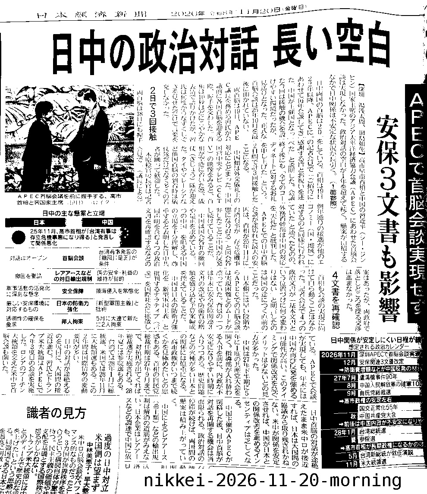
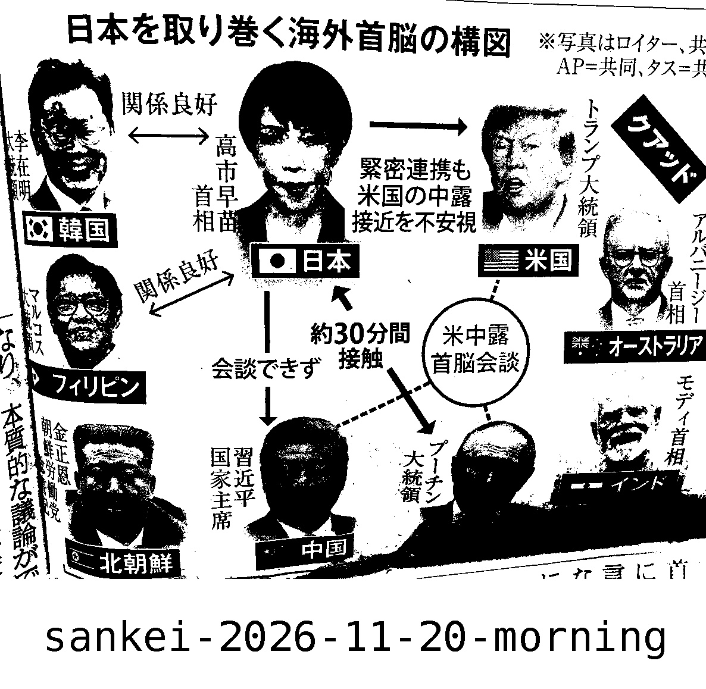

잠시 전에 도서관에서 일본에서의 주요한 신문(11월 20일 아침)을 조사해 봤지만, 다음과 같이 日經신문과 每日신문에만 김건희 대법원 판결에 대한 기사가 있었습니다.
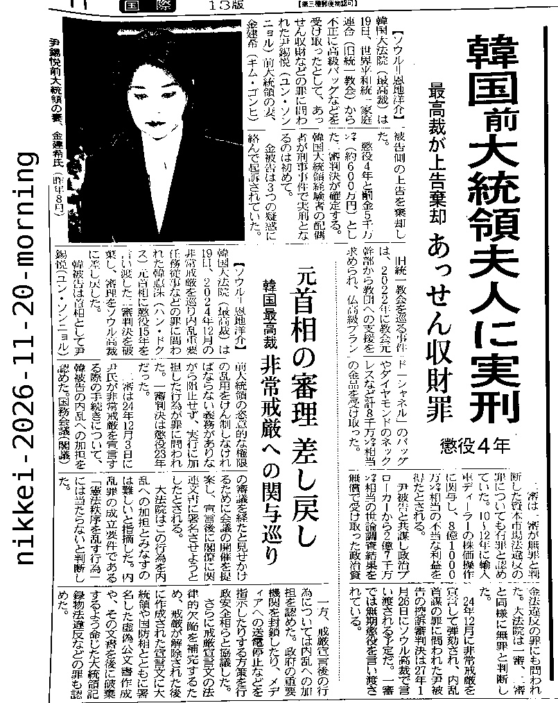
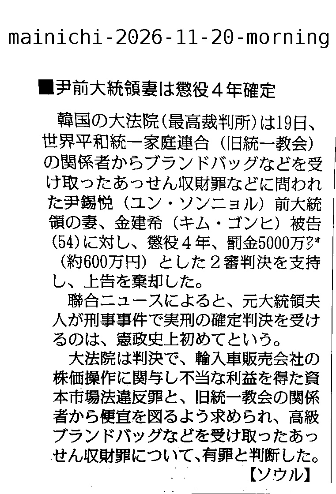
전에 말한 바와 같이 이 지역에 있는 도서관(芝生図書館 그리고 小寺池図書館)은 모두 지금 휴무중에 있으니까 오늘은 다른 지역에 있는 도서관에 가고 신문을 읽어 볼 생각입니다. 저녁엔 돌아오겠지만 늦게 될 수도 있어요.
小寺池図書館は、リニューアル工事のため令和8年6月22日（月曜日）から令和8年12月31日（木曜日）まで臨時休館します。
6月22日から小寺池図書館リニューアル工事のため臨時休館（ただし予約本のみ受取可）
https://www.city.takatsuki.osaka.jp/soshiki/68/172773.html
芝生町にある「高槻市立芝生図書館」が改修工事のため臨時休館するようです。 (중략) 高槻市のホームページによると、休館期間は2026年11月1日（日）から2027年1月5日（火）までとのこと。2か月ちょっとのお休みになります。
芝生図書館も11月1日から臨時休館。市民プールと同じ複合施設。来年1月5日まで
https://www.takatsuki2.jp/town/book-20261010.html
한 소문에 대항하기 위해 좀 뉴스도 소개해 보요. 다만 subscribe하지 않으면 읽을 수 없는 것 같습니다.
Shenzhen Was No Yalta Conference
오늘도 점심 후에 외출해 보요. 그런데 아직 이걸 모르는 일본 사람도 있을지도 모르니까 언론사가 어제 열린 김건희의 선고공판에 대한 보도를 낼 때 사용했을 수 있는 영상을 다음에 열거합니다:
(2025/9/24) 株価操作等事件 初公判
https://youtube.com/shorts/1XF8TtYoU64
https://youtube.com/shorts/1Ij0qBSjATE
(2025/11/19) 株価操作等事件 第10回 公判
https://www.youtube.com/live/frWFHrD6Xpc
(2025/12/3) 株価操作等事件 1審 結審公判
(2026/1/28) 株価操作等事件 1審 宣告公判
(2026/4/13) 金健希が被告人として出席した公判
https://youtube.com/shorts/hFzLnjtKMao
(2026/4/30) 株価操作等事件 2審 宣告公判
(2026/6/26) 賣官賣職事件 1審 宣告公判
https://youtube.com/shorts/GYMaM3t99Eg


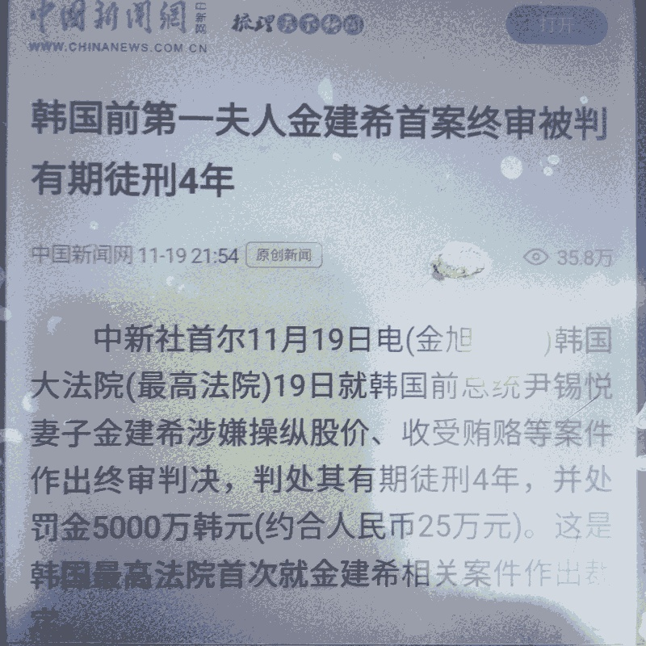


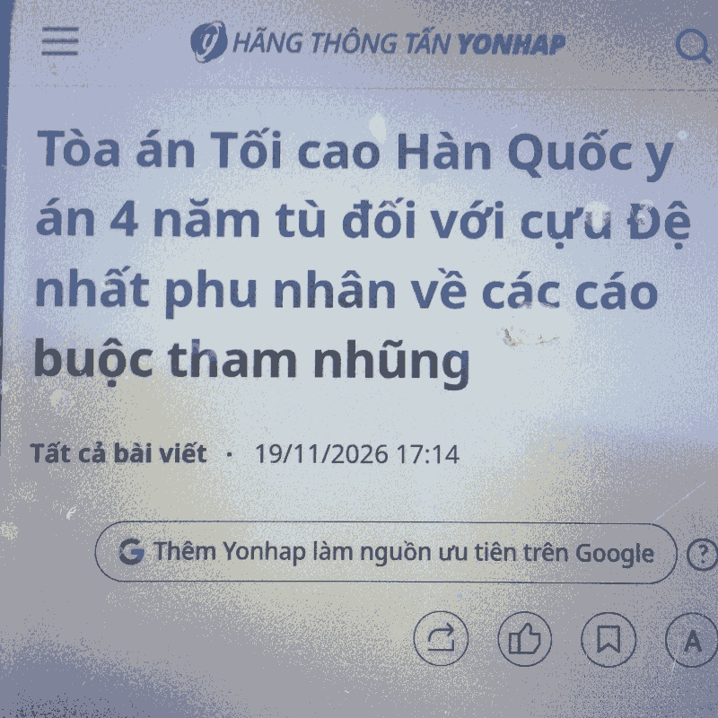
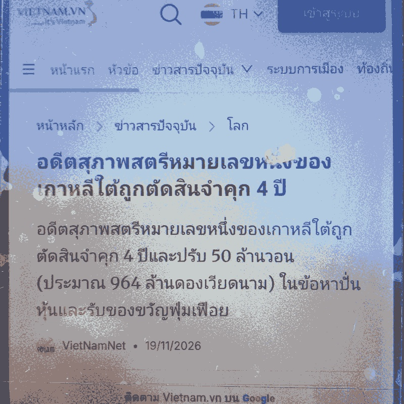
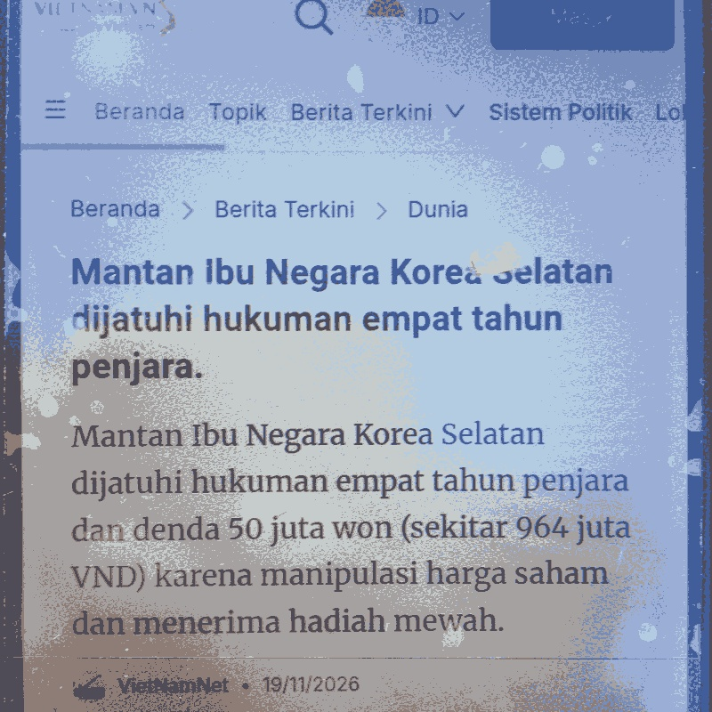
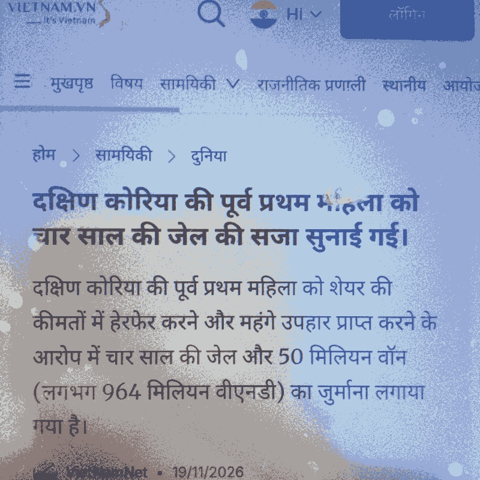

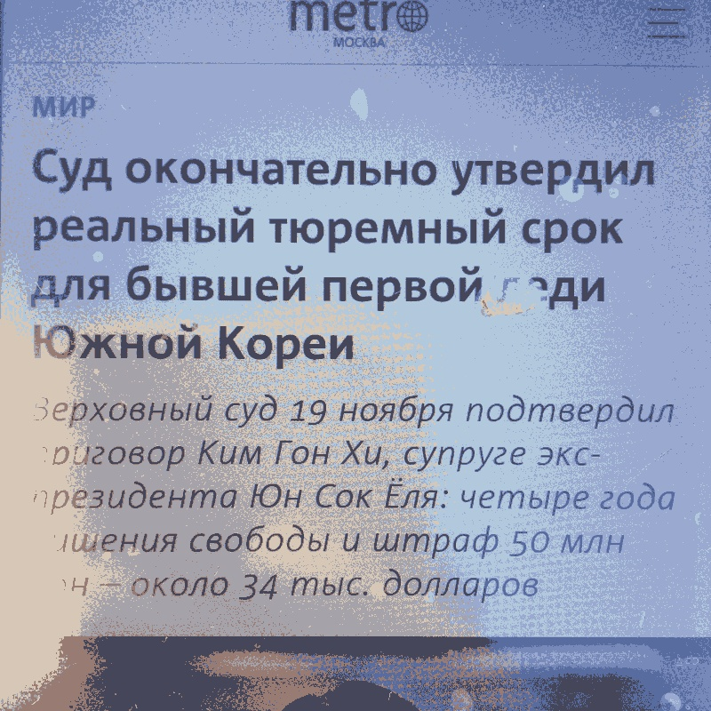
다음과 같이 생활보호 신청에 대한 통지서가 도착했습니다. 전에 말한 바와 같이 시청에 다음달 1일에 갈 예정였지만, 이달 26일에 갈 수도 있습니다. 저의 생활보호 신청은 허가되고 저는 앞으로 나랏밥을 먹게 되니까, 당분간은 다카이치 씨와 그분의 친구이신 T대통령에 대한 반말하지 않겠습니다.

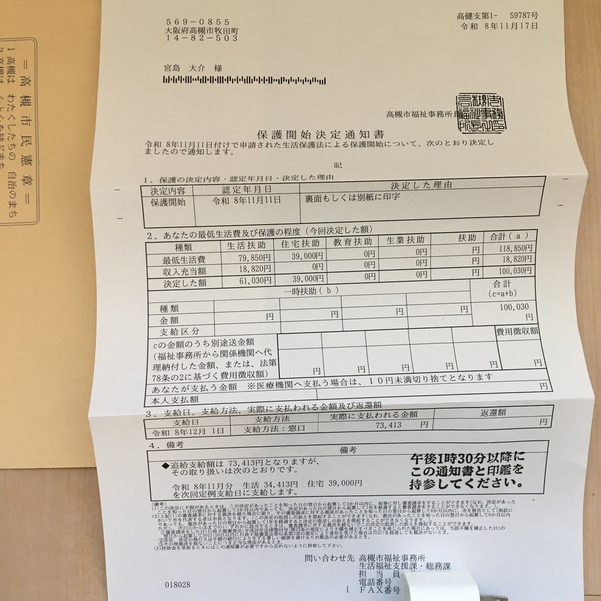

다음은 YTN가 낸 선고 생중계일 것 같습니다.
https://www.youtube.com/watch?v=7qJgfBCnYUU
어제의 선고 영상에 대해선 저도 오늘 wifi spot에 갔을 때 봐 보지만, 아마 대법원의 SNS 상에서 볼 수 있을 것이니까 URL만 다음에 쓰기로 합니다.
https://www.youtube.com/user/scourtkorea
http://www.facebook.com/scourtkorea
https://blog.naver.com/law_zzang
안녕하세요? 한 소문에 대항하기 위해서 다음 가사를 소개해 보요.
Trump says Iran is ‘looking at biological weapons and gases’ after DC dirty bomb claims
?
https://www.j-cast.com/2026/11/04518878.html?p=all
안녕하세요? 지금 오전 한 시경입니다. 박해를 피하기 위해서 다음 기사를 소개합니다. 다카이치 씨가 '법의 지배에 의거한 국제질서'라는 말을 하셨으니까 역시 그분에겐 중일관계가 별로 중요하지 않는 것 같다고 생각했는데요. 다만 여기에 있는 일본 사람들이 이걸 읽은 후에도 이해하지 않을 수도 있습니다. 다시 자겠습니다~
高市総理は、フィリピン・マニラでの東南アジア諸国連合(ASEAN)から中国・深圳でのAPECまで一連の外交について「外交ウィークの大きな成果となったのは、基本的価値を共有する民主主義国家である、日本、米国、オーストラリア、インドの4カ国によるクアッド首脳会合を開催したことだ。法の支配に対する挑戦が一段と厳しさを増す中、（4カ国首脳会談で）自由で開かれたインド太平洋の実現に向けて、具体的な協力を推進する、戦略的じゅうようせいについて 認識を共有することができた」と述べました。 さらに、中国の対外進出や、レアアース輸出規制などを念頭に、「4カ国の首脳は、力または威圧による一方的な現状変更の試みに対する強い反対を表明するとともに、恣意的な輸出規制を含む経済的威圧に対する深刻な懸念を表明した」と表明した上で、「基本的価値を共有する民主主義国家として、常に地域の平和と安定に貢献してきた（4カ国による）クアッドは、これからも地域のパートナーとともに、インド太平洋の未来を造る」と述べて、民主主義を基本的価値とした結束の重要性を強調しました。
【速報】高市総理が記者会見「法の支配に基づく自由で開かれた国際秩序を維持する確かな手応え」ASEAN・APEC外遊について
https://www.fnn.jp/articles/-/1155486
사상 첫 영부인 실형 확정된 'V0' 김건희…다른 재판도 많아
https://www.yna.co.kr/view/AKR20261119152400004
Supreme Court finalizes 4-yr prison term for ex-first lady on corruption charges
韩国前第一夫人金建希首案终审被判有期徒刑4年
https://www.chinanews.com.cn/gj/2026/11-19/10734932.shtml
韓国前大統領の妻・金建希被告、懲役4年の実刑確定 旧統一教会から高級ブランド品不正に受け取った罪など（2026年11月19日掲載）
https://news.ntv.co.jp/category/international/053e0030af0540068c3b90280c721126
La Justicia ratifica condena a cuatro años de prisión de la ex primera dama Kim Keon Hee por corrupción
(2e LD) La Cour suprême confirme la condamnation de l'ex-Première dame à 4 ans de prison pour corruption
https://fr.yna.co.kr/view/AFR20261119002600884
Tòa án Tối cao Hàn Quốc y án 4 năm tù đối với cựu Đệ nhất phu nhân về các cáo buộc tham nhũng
https://vi.yna.co.kr/view/AVI20261119001300880
อดีตสุภาพสตรีหมายเลขหนึ่งของเกาหลีใต้ถูกตัดสินจำคุก 4 ปี
https://www.vietnam.vn/th/cuu-de-nhat-phu-nhan-han-quoc-bi-tuyen-an-4-nam-tu-giam
Mantan Ibu Negara Korea Selatan dijatuhi hukuman empat tahun penjara.
https://www.vietnam.vn/id/cuu-de-nhat-phu-nhan-han-quoc-bi-tuyen-an-4-nam-tu-giam
दक्षिण कोरिया की पूर्व प्रथम महिला को चार साल की जेल की सजा सुनाई गई।
https://www.vietnam.vn/hi/cuu-de-nhat-phu-nhan-han-quoc-bi-tuyen-an-4-nam-tu-giam
Była pierwsza dama Korei Południowej skazana na cztery lata więzienia.
https://www.vietnam.vn/pl/cuu-de-nhat-phu-nhan-han-quoc-bi-tuyen-an-4-nam-tu-giam
La Corte Suprema sudcoreana conferma quattro anni di carcere per l’ex first lady Kim Keon Hee per corruzione
Суд окончательно утвердил реальный тюремный срок для бывшей первой леди Южной Кореи
안녕하세요? 지금 19일 오후 11시경입니다. 한덕수는 결국 '대행갱신'이 내렸기 때문에 그대로 구속될 것 같습니다. 다시 자겠습니다~
대법원이 19일 한덕수 전 국무총리의 구속 기간 만료 약 7시간 전에 파기환송을 선고했지만 한 전 총리의 구속 상태는 유지된다. 사건을 돌려받는 서울고등법원을 대신해 대법원이 구속기간을 갱신하는 ‘대행갱신’ 결정을 내리면서 한 전 총리는 구속 상태로 파기환송심을 받게 됐다.
대법, 한덕수 구속기간 만료 전 ‘대행갱신’ 결정으로 구속 유지
https://www.donga.com/news/Society/article/all/20261119/135056617/1
'3대 의혹' 김건희 징역 4년 확정…영부인 출신 첫 실형(종합)
https://www.yna.co.kr/view/AKR20261119137052004
Korea’s top court upholds Kim Keon Hee’s 4-year prison sentence
https://www.koreaherald.com/article/10943145
韩国前第一夫人金建希贪腐案终审获刑四年
https://www.zaobao.com.sg/news/world/story20261119-10026153
尹前大統領の妻・金建希被告 懲役４年が確定
https://world.kbs.co.kr/service/news_view.htm?lang=j&Seq_Code=95061
26. 11. 19
잘은 모르지만 내일 한덕수가 석방될 가능성도 있을지도 모릅니다. 다만 아쨌든 김건희의 형이 확정되었으니까 오늘은 좋은 날이군요. 그런데 일본 사람들은 아직 둔하니까 (그들이 어제 제가 'APT.'라는 노래에 대해 이야기하고 있었다고 이해하지 않았을 수도 있어요) 저는 내일도 심한 박해를 당할 것입니다. 잠시 전에 인용한 기사에 '(다카이치 씨는) 習主席の手を握りながら一方的に喋り続け、習主席がうなずく場面もありました'라는 글이 있었으니까 역시 그분이 이번 중국 방문에 있어서 시 주석과 대화하셨다고는 말할 수가 없는데요. 이 나라에선 큰 소리로 말하는 자가 이기는 것 같습니다. 저는 역시 박해를 피하기 위해서 내일 이후에도 뉴스에 대해 말해 갈 거예요. 안녕히 주무세요 한국인이시고 아마존 KIX3에서 일을 하신 Lee씨, 제가 사랑하는 유일하신 분.
https://www.fnn.jp/articles/-/1155292
?
[속보] 대법, 한덕수 내란 혐의 일부 무죄 취지 파기환송
https://www.news1.kr/society/court-prosecution/6359885
韩国大法院就金建希“三大争议”案作出终审判决
https://www.163.com/dy/article/LC40HO160530WJIN.html
【速報】キム・ゴンヒ夫人、懲役4年確定…「ミョン・テギュン世論調査」は無罪
https://www.chosun.com/jp/politics-national-jp/2026/11/19/VYFM2PSVUVAS5C6ZJR5PHNYS74/
Supreme Court Upholds 4-Year Prison Term for Kim Keon-hee Over 3 Allegations, Acquits Her of Myeong Tae-gyun Poll Charge
https://news.sbs.co.kr/english/article.do?news_id=N1008854171
Supreme Court upholds Kim Keon-hee’s 4-year sentence for stock manipulation
https://biz.chosun.com/en/en-society/2026/11/19/C7ZK2F5GPNGHDC5E4HBPWLKJQ4/
(LEAD) Supreme Court finalizes 4-yr prison term for ex-first lady on corruption charges
https://en.yna.co.kr/view/AEN20261119002451315
Urgent: S. Korea's top court finalizes 4-year sentence for ex-President Yoon's wife over corruption
https://english.news.cn/20261119/b190ee951e854bbea2b3acd455f1cdc2/c.html
[속보]대법 전원합의체, 김건희 '3대 의혹' 징역 4년 확정
https://www.newsis.com/view/NISX20261119_0003875433
16:23 [속보] 대법, '3대 의혹' 김건희 징역 4년 확정
https://www.news1.kr/society/court-prosecution/6359796
16:14 [속보] 대법 "김건희 정치자금법 위반 부분 2심 무죄 판단 정당"
https://www.news1.kr/society/court-prosecution/6359816
16:11 [속보]대법 "윤석열-명태균, 여론조사 제공 합의 있다고 보기 어려워"
https://www.news1.kr/society/court-prosecution/6359811
16:01 [속보] 대법원 전원합의체 선고 시작…김건희·한덕수 순
https://www.news1.kr/society/court-prosecution/6359787
다카이치 씨는 어젯밤에도 시 주석과 (약 15초 동안) 악수를 하셨지만, 오늘도 더 단단히 악수를 하셨답니다.
高市総理は19日、一連の外交日程を終え、夕方には帰国の途につきますが、総理周辺は米中露の会談に向け「くさびは随所に打ってきた」と話し、冷静な構えです。 高市総理は午前10時過ぎ、APECの会議に先立ち、再び中国の習主席の出迎えを受けましたが、19日は約10秒間にわたり習主席の手を握りながら一方的に喋り続け、習主席がうなずく場面もありました。 他の首脳は、握手してすぐにその場を去るという形でしたが、高市総理はかなり長い時間にわたる握手となりました。 一方、米中露の会談を前に、高市総理は17日にトランプ大統領、18日はプーチン大統領と個別に対面しています。 外務省幹部は「トランプ大統領には中国に譲歩しないよう事前に打ち込んだ」、さらに「終了後には大統領から総理に報告もあるだろう。心配ない」と話していました。 そしてプーチン氏とは当初、短時間の接触のみと見られていましたが、30分間に渡り座って対話し、総理周辺は「ロシア側も対話を求めていた。米中露の前に効果もある」と強調しています。 高市総理は午後、記者会見を行いますが、米中露の会談について何を話すかも注目です。
習主席と10秒間握手、話し続ける高市総理にうなずく場面も 米中露首脳会談に向け「くさびを随所に打ってきた」周辺は冷静な構え
https://www.fnn.jp/articles/-/1155292
다음 뉴스에서 기자가 '선고는 실시간으로 생중계되고요, 다만 상고심은 피고인 출석 의무가 없기 때문에 두 피고인은 법정에 모습을 드러내지는 않을 전망입니다'고 하고 있네요. 오늘 김건희가 출석하진 않기 때문에 제가 일본 사람들이 소문을 내지 않도록 오늘 선고 생중계를 볼 필요는 없을 것입니다.
[앵커] 오늘 한덕수 전 국무총리와 김건희 씨에 대한 대법원 선고가 이뤄집니다. 선고 과정은 TV로 생중계될 예정인데요. 대법원 취재기자 연결해보겠습니다. 김선홍 기자.
[기자] 네, 대법원입니다. 오늘 오후 4시, 한덕수 전 국무총리와 김건희 씨에 대한 대법원 전원합의체 선고가 이곳에서 이뤄집니다. 선고는 실시간으로 생중계되고요, 다만 상고심은 피고인 출석 의무가 없기 때문에 두 피고인은 법정에 모습을 드러내지는 않을 전망입니다.
한덕수·김건희 오늘 대법 선고…TV 생중계
https://www.yonhapnewstv.co.kr/news/MYH20261119113252hyb
저의 생활보호 신청에 대한 통지서는 아직 오지 않았지만 앞서 말한 바와 같이 점심 후에 좀 외출해 봅니다. 다음 뉴스도 오늘 열리는 선고공판에 김건희가 출석할지에 대해 말하지 않았지만, 역시 오후 4시에 시작되고, YTN도 선고의 순간을 아마 영상으로 전해 주실 것이라니까 우선 영상을 직접 봐 보기로 했습니다. 다만 선고 영상을 보는 건 내일 wifi spot에서 할지도 모릅니다.
[앵커] 오늘 대법원 선고 언제 진행됩니까?
[기자] 네, 오늘 오후 4시, 대법원 대법정에서 선고기일이 열립니다. 사건번호에 따라 김건희 씨 3대 의혹, 한덕수 전 총리 내란 혐의 순으로 선고가 진행되고 대법원 유튜브를 통해 생중계됩니다. 조희대 대법원장이 주문을 읽을 텐데, 이 모습은 저희 YTN에서도 함께 전해드릴 예정입니다.
김건희·한덕수 오늘 대법 선고...3대 의혹·내란 최종 판단
https://www.ytn.co.kr/_ln/0103_202611190950582542
일본 사람들은 '당사자가 불출석한다니 오늘 생중계된다는 선고공판은 어떤 식으로 진행될 거야?' 할 것인데요. 다음 기사에 의하면 이날에 열리는 선고공판은 (1) 조희대 대법원장의 사건 개요, 쟁점 등에 대한 설명 → (2) 주심 대법관의 다수 의견이나 이유 요지, 별개 의견 및 보충의견 판시 → (3) 조 대법원장의 주문 선고 이같이 진행될 것이라고 합니다. 아마 오늘 나는 영상은 일본 사람들에겐 너무 재미없을 거예요. 그런데 저는 오늘 이 선고공판이 오후 4시에 열리기 때문에 식사 시간 등을 조정하겠다고 말했지만, 역시 점심 식사는 평소와 같이 먹기로 합니다. 다만 점심 후에 두, 세 시간 정도 외출하고 저녁에 하는 작업에 대비할 생각입니다. 아마 Wifi가 있는 곳에 가니까 APEC 회의 영상 등을 확인할지도 모릅니다.
대법원 전원합의체는 이날 오후 4시 한 전 총리의 내란 중요임무 종사 등 혐의와 김 여사의 자본시장법 위반, 정치자금법 위반, 특정범죄 가중처벌법상 알선수재 혐의 상고심 선고기일을 진행한다. 대법원 전원합의체 선고는 조희대 대법원장의 사건 개요, 쟁점 등에 대한 설명으로 시작된다. 이후 주심 대법관의 다수 의견이나 이유 요지, 별개 의견 및 보충의견을 판시하면 마지막으로 조 대법원장이 주문을 선고한다. 한 전 총리 사건은 오경미 대법관이, 김 여사 사건은 박영재 대법관이 주심을 맡았다.
12·3 계엄→'내란', 716일 만에 대법 전원합의체 첫 판단 나온다
https://www.newsis.com/view/NISX20261118_0003873899
다음은 어제 난 기사인데요. (당사자는 불출석) 한덕수도 불출석한답니다.
대법원은 오는 19일 오후 4시 선고 예정인 한 전 총리와 김 여사 사건 전원합의체 선고를 실시간 생중계하기로 결정했다고 18일 밝혔다. 이에 따라 선고는 국민 누구나 TV, 대법원 유튜브 채널 등을 통해 볼 수 있다. 다만 대법원 상고심은 피고인 출석 의무가 없어 한 전 총리와 김 여사는 출석하지 않을 전망이다.
대법, 내일 한덕수·김건희 선고 TV 생중계…당사자는 불출석
https://www.yna.co.kr/view/AKR20261118170600004
일본 사람들이 스스로 조사를 할 수 있도록 다음 링크를 준비했어요.
https://www.yna.co.kr/search/index?query=%EA%B9%80%EA%B1%B4%ED%9D%AC
https://www.news1.kr/search?query=%EA%B9%80%EA%B1%B4%ED%9D%AC
https://www.donga.com/news/search?query=%EA%B9%80%EA%B1%B4%ED%9D%AC
https://search.khan.co.kr/?q=%EA%B9%80%EA%B1%B4%ED%9D%AC
https://www.munhwa.com/search?word=%EA%B9%80%EA%B1%B4%ED%9D%AC
https://search.hani.co.kr/search?searchword=%EA%B9%80%EA%B1%B4%ED%9D%AC
https://www.mk.co.kr/search?word=%EA%B9%80%EA%B1%B4%ED%9D%AC
https://www.joongang.co.kr/search?keyword=%EA%B9%80%EA%B1%B4%ED%9D%AC
https://news.jtbc.co.kr/search?keyword=%EA%B9%80%EA%B1%B4%ED%9D%AC
https://imnews.imbc.com/more/search/?search_kwd=%EA%B9%80%EA%B1%B4%ED%9D%AC
https://search.naver.com/search.naver?where=news&query=%EA%B9%80%EA%B1%B4%ED%9D%AC
https://news.nate.com/search?q=%EA%B9%80%EA%B1%B4%ED%9D%AC
그런데 오늘 열리는 김건희 선고공판에 대한 기사는 대부분 한덕수의 같은 날에 열리는 선고공판과 관련해 김건희 선고공판에도 언급하는 식의 기사일 것 같은데요. 이런 사정을 모르는 일본 사람들이 실은 김건희 선고공판에만 언급한 기사가 많이 있는데도 게사 그걸 고의로 거의 내지 않다고 할 수도 있습니다. (다음 기사들 중엔 '출석'이나 '불출석'라는 말이 역시 없는 것 같았습니다)
'비상계엄 선포 방조' 한덕수, 오늘 대법 선고…'3대 의혹' 김건희도 함께 판단
https://news.nate.com/view/20261119n01653
오늘 한덕수·김건희 대법원 선고…오후 4시 생중계
https://news.nate.com/view/20261119n02217
김건희 '3대 의혹' 오늘 대법 결론…'명태균 여론조사' 판단 주목
https://news.nate.com/view/20261119n02132
'한덕수 내란·김건희 3대 의혹'…오늘 나란히 대법 선고
https://news.nate.com/view/20261119n01112
오늘 편지에 쓴 일에 관련해 말해 보겠습니다. 다음 기사 중에 '출석'이나 '불출석'라는 말이 있는지 조사해 봤지만, 없는 것 같았습니다. 다른 기사들도 조사해야 합니다.
대법원은 오늘(19일) 오후 4시 대법정에서 한 전 총리의 내란중요임무종사 등 혐의 사건과 김 씨의 3대 의혹 사건 선고기일을 엽니다.
한덕수·김건희 오늘 상고심 선고...실시간 생중계
https://www.ytn.co.kr/_ln/0103_202611190002091713
PS: 東京新聞라는 신문도 다음과 같은 기사를 내고 있으니 좀 일용해 봅니다. 일본에선 어게 공항에서의 환영이 '미국이나 러시아와 비교될 때' 간소화된 일였다는 보도가 많게 보이지만, 진짜일까요? 앞서 다른 나라 지도자들이 받은 환영에 대한 기사를 소개했는데, 가능하시면 당신도 스스로 비교해 보십시요. (다카이치 씨가 받은 환영이 이재명 대통령이 받은 환영과 비교될 때에도 간소화된 일이라는 건 분며하지만) 그분이 필리핀이 아니라 중국에서 이 시점까지 대화하신 사람이 러시아 대통령 뿐일 수도 있는데요. 무식한 일본 사람들이 '15초 동안의 만남을 대화라고 부르는 건 가능한다'고 할 수도 있는데요.
ＡＰＥＣでは議長を務める習氏が妻の彭麗媛さんと共に参加国首脳を出迎え、首相とも握手した。握手の際、首相は何か話しかけたが、習氏は無言だったように映った。中国は日本への強硬姿勢を崩しておらず、正式会談は困難な情勢だ。首相は１９日まで滞在する。
高市首相初訪中、習近平氏と握手 ＡＰＥＣ、ロシア大統領とも対話
https://www.tokyo-np.co.jp/article/528980
高市首相の出迎え簡素 花束なし、米ロと比べ
https://www.tokyo-np.co.jp/article/529051
안녕하세요? 다음에 일본 사람들이 오해할 수 있는 점에 대해 써 봅니다.
1. 다카이치 씨가 이재명 대통령이나 필리핀, 태국, 미국 지도자들과 대화한 건 ASEAN 및 Quad 회의가 열린 필리핀에 있어서의 일이고, 중국에서 진행 중인 APEC과는 무관한 일입니다. Quad 회의에 대해선 어제 설명했습니다.
2. 다카이치 씨가 어젯밤에 중국에서 시 주석과 악수를 하셨는데요 이 일은 단지 15초 동안의 일였고, 다카이치 씨가 시 주석에게 일방적으로 말을 하신 뿐이랍니다. 이건 대화가 아니라 혼잣말과 같은 일인데요.
日中首脳が接触 高市首相から話しかける場面も
高市早苗首相は18日夜、中国・深圳で開かれているアジア太平洋経済協力会議（APEC）の首脳会議の歓迎式典で、議長を務める中国の習近平（シーチンピン）国家主席と握手を交わした。高市氏が習氏のもとへ進むと、両氏はほぼ同時に右手を差し出して片手で握手を交わした。高市氏が習氏の顔を見ながら、身ぶりを交えて話しかける場面もあった。その後の記念撮影では、笑顔を見せる高市氏に対して、習氏も終始穏やかな表情を浮かべていた。高市氏が立ち去る間際にお辞儀をすると、習氏も小さく返した。両氏の接触は約15秒間だった。昨年11月、台湾有事をめぐる高市氏の国会答弁に中国が反発し、関係が冷え込んで以降、両氏が顔を合わせるのは初めて。
APEC首脳会議関連日程（中国・深圳）
※カッコは日本時間
■18日の日程
昼ごろ（午後） 中ロ首脳会談
夜 晩餐会
■19日の日程
9:45-12:00(10:45-13:00) APEC首脳会議
12:45(13:45) 米中首脳会談
午後 高市首相、内外記者会見
14:30（15:30） 米中ロ首脳会談
高市首相が習主席と握手、接触は15秒間 プーチン氏とは意見交換
https://www.asahi.com/articles/ASVCK7TSGVCKUTFK027M.html
アジア太平洋経済協力会議（APEC）首脳会議が18日、中国・深圳で開幕したが、高市早苗首相と議長を務める中国の習近平国家主席との接触は「握手」にとどまった。日本政府にとって高市氏との正式な会談見送りは想定内だが、主要参加国で習氏と会談できない事態は異例だ。年末に予定する安全保障関連3文書の改定を巡り、中国の反発はさらに強まる可能性もあり、日中関係の改善は見通せない。高市氏は18日午後に深圳の空港に到着したが、トランプ米大統領やプーチン露大統領が到着した時に比べ、歓迎セレモニーは簡素で、他国首脳との待遇「格差」が目立った。
高市首相と習氏は「握手」のみ 主要国で会談なしは異例 APEC
https://mainichi.jp/articles/20261118/k00/00m/010/278000c
안녕하세요? 지금 오전 세 시경입니다. 어제 열린 저녁회에서의 group photo는 다음 기사서 보실 수 있습니다.
APEC Summit Photo Highlights Putin’s Reemergence, Japan-China Tensions
다른 나라 지도자들에 대한 뉴스도 봐 볼까? 다시 자겠습니다~
Mexico President Claudia Sheinbaum Goes Viral in China for Flying in Economy
For the Thai prime minister, Apec in Shenzhen is almost home ground
PM Wong arrives in Shenzhen for APEC summit
https://www.zaobao.com.sg/en/news/singapore/pm-wong-arrives-shenzhen-apec-summit
Live: Chilean President José Antonio Kast arrives in Shenzhen, China
Taiwan’s APEC envoy Stan Shih may receive warm welcome in Shenzhen: Hong Kong media
Vietnam's top leader arrives in Shenzhen for APEC meeting
https://global.chinadaily.com.cn/a/202611/17/WS6afbb28ce4b03ebf8519cc99.html
Malaysian PM arrives in Shenzhen for APEC meeting
https://www.chinadaily.com.cn/a/202611/18/WS6afc82a9e4b03ebf8519cfde.html
Peruvian president arrives for meeting with President Xi Jinping
Sultan of Brunei arrives in Shenzhen for APEC meeting
Indonesian president arrives in Shenzhen for APEC meeting
https://english.news.cn/20261118/f81b25706c9549ceaba099b886b3a2b9/c.html
Marape arrives in China as PNG seeks to strengthen ties
https://www.thenational.com.pg/marape-arrives-in-china-as-png-seeks-to-strengthen-ties
Marcos arrives in Shenzhen, China for APEC summit
https://www.abs-cbn.com/news/nation/2026/11/18/marcos-arrives-in-shenzhen-china-for-apec-summit-1735
(11. 16) Carney arrives in China for meeting with Xi Jinping, Asia-Pacific summit
https://www.cbc.ca/news/politics/carney-china-xi-apec-9.7423904
PS: 다카이치 씨도 어제 중국에 도착했는데, 시 주석과 악수를 할 수 있었을 것 같습니다.
Chinese President Xi Jinping shook hands with visiting Japanese Prime Minister Sanae Takaichi on Wednesday, the first official interaction between the two leaders since bilateral ties deteriorated late last year in the wake of comments made by Takaichi about Taiwan. The encounter came as Xi and his wife, Peng Liyuan, received guests at a welcome banquet for guests attending the Asia-Pacific Economic Cooperation leaders’ meeting in Shenzhen. Takaichi shook hands with Xi, after which they exchanged a few words. Takaichi then shook hands with Peng.
China’s Xi Shakes Hands With Takaichi as Ties Remain Strained
Xi greets Takaichi with a smile – but no words – as China-Japan freeze lingers
다만 공항에서의 환영은 다른 나라 지도자들과 비교될 때 좀 간소화되었을 것 같습니다.
Japanese Prime Minister Sanae Takaichi arrived in Shenzhen on Wednesday (18 November) afternoon to attend the Asia-Pacific Economic Cooperation (APEC) Economic Leaders’ Meeting. She was greeted at the airport by Zhang Qiyue, China’s retired former ambassador to Greece. Hong Kong newspaper Ming Pao reported that television footage showed Zhang welcoming Takaichi at the airport. In contrast, many other leaders attending the APEC meeting were met by Huang Chuping, chairman of the Guangdong Provincial People’s Congress Standing Committee, or Lin Keqing, chairman of the Guangdong Provincial Committee of the Chinese People’s Political Consultative Conference — both serving officials of full ministerial rank. The report described the reception as “extremely low-key”, noting that China had assigned a retired official of full bureau-level rank to greet Takaichi and that there was no welcoming contingent of students holding bouquets. The report also cited Japanese broadcaster TBS as saying that China’s airport welcoming ceremony for Takaichi was smaller than those for other national leaders attending the meeting.
Takaichi arrives in Shenzhen, greeted by retired Chinese ambassador to Greece
Takaichi makes low-key arrival in Shenzhen after South Korea’s Lee is greeted by dancers
【速報】高市総理が中国・深センに到着 空港での歓迎行事縮小か プーチン大統領ら各国首脳と対応に差
https://newsdig.tbs.co.jp/articles/-/3095250
이재명 대통령이나 호주 수상의 경우 더 호화한 환영였을 것 같은데요. 다시 자겠습니다~
이재명 대통령 부부, 중국 선전 도착
https://www.newsis.com/view/NISI20261118_0002294850
VIDEO: Albanese arrives in China for the APEC Summit
https://www.abc.net.au/news/2026-11-18/albanese-arrives-in-china-for-the-apec-summit/107399818
안녕하세요? 지금 오전 한 시경입니다. 어제 말한 바와 같이 오늘은 오후 네 시부터 대법원에서 김건희에 대한 선고공판이 시작되기 때문에 식사 시간 등을 조정하면서 오늘 중에 낼 것이라고 예상되는 판결에 대한 뉴스를 확인하기로 합니다. 다시 자겠습니다.
대법원 전원합의체(주심 박영재 대법관)는 이날 오후 4시 김 여사의 자본시장법 위반 등 혐의 사건 선고기일을 연다. 민중기 특별검사팀(김건희 특검)이 지난해 9월 김 여사를 기소한 지 1년 3개월 만에 나오는 첫 대법원 판단이다. 이 사건은 당초 지난 7월 선고 예정이었지만 대법원이 사건을 전원합의체로 넘기며 선고가 미뤄졌다. 김 여사는 도이치모터스 주가조작·명태균 여론조사·통일교 금품 수수 등 '3대 의혹' 사건으로 1심에서 징역 1년8개월을 선고받았다. 2심에서는 도이치모터스 주가조작 가담 혐의 일부가 추가로 인정돼 징역 4년과 벌금 5000만 원을 선고받았다.
김건희 '3대 의혹' 종착역…명태균 여론조사 판단 주목